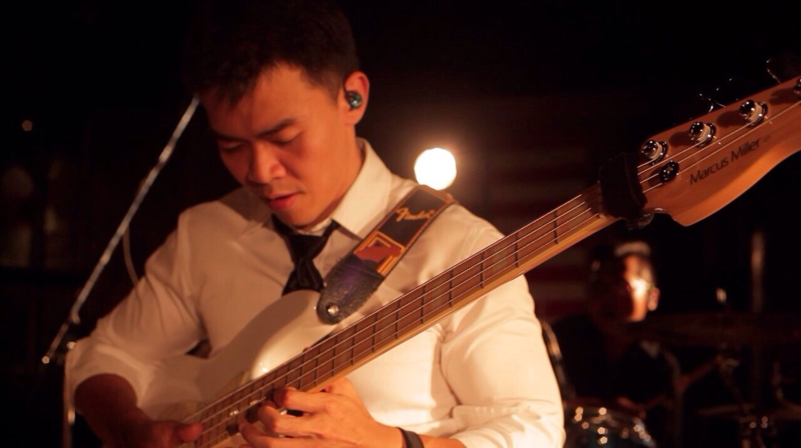

Bassists

A bassist, or bass player, is a musician who plays a bass instrument such as a double bass (upright bass, contrabass, wood bass), bass guitar, synthbass, keyboard bass or a low brass instrument such as a tuba or sousaphone. Different musical genres tend to be associated with one or more of these instruments. Since the 1960s, the electric bass has been the standard bass instrument for funk,[2] R&B, soul music, rock and roll, reggae, jazz fusion, heavy metal, country and pop music. The double bass is the standard bass instrument for classical music, bluegrass, rockabilly, and most genres of jazz. Low brass instruments such as the tuba or sousaphone are the standard bass instrument in Dixieland and New Orleans-style jazz bands.
Despite the associations of different bass instruments with certain genres, there are exceptions. Some new rock bands and bassist used a double bass, such as Lee Rocker[3] of Stray Cats, Barenaked Ladies and Tiger Army. Larry Graham, Bernard Edwards, Mick Hogan, Andy Fraser, and Mel Schacher[4] used electric bass guitar. Some funk, R&B and jazz, fusion groups use synth bass or keyboard bass rather than electric bass. Bootsy Collins, Stevie Wonder, Kashif and Kevin McCord(One Way) used synth bass. Some Dixieland bands use double bass or electric bass instead of a tuba. In some jazz groups and jam bands, the basslines are played by a Hammond organ player, who uses the bass pedal keyboard or the lower manual for the low notes.
The Harmonic Clubs are able to provide it's members with this instrument. We have over 4 of these instruments in our group. You are also allowed to bring in your own instrument.
Bassists are the second most abundant role in the Harmonic Clubs.